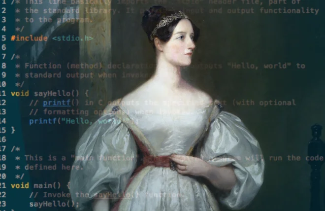

Список терминов

14:48 25.09.2026
- Цикл (loop)
- многократное повторение одной и той же последовательности операций для вычислений.
- Рабочая ячейка (variable/cell)
- место в памяти машины для хранения промежуточных и конечных числовых данных.
- Первая программа (алгоритм)
- составленная ею таблица вычисления чисел Бернулли для машины Бэббиджа, признанная первой в истории компьютерной программой.
- Язык программирования Ada
- названный в её честь универсальный язык, созданный по заказу Пентагона в конце 1970-х годов